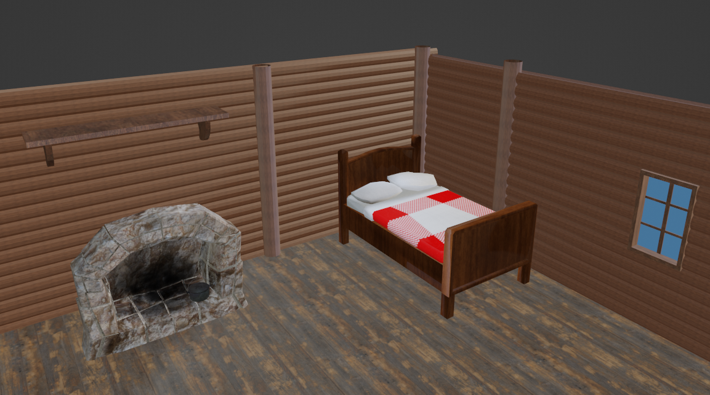

Sari Halonen
Peliohjelmoinnin opiskelija Kotkasta
Grandma's Cottage
Global Game Jam 2023 -jamin aikana kuuden ihmisen ryhmässä toteutettu peliprojekti. Jamin teemana oli juuret.
Tekniset jutut
| Pelimoottori | Unity 2021.3.16f1 |
|---|---|
| Alusta | PC |
Grafiikkatyyli
Low-ish poly 3D-grafiikka
Pelin idea
Jamin teeman pohjalta lähdettiin porukassa miettimään millä tavalla teema haluttiin tuoda pelissä esiin. Pitkän miettimisen jälkeen päädyttiin käyttämään juuria henkilön taustana ja pelin ideana onkin pelihahmon "juurille" paluu. Pelin gameplay keskittyy lähinnä 3D-tasohyppelyyn.
Projektin toteutus
Projektin suunnittelu tehtiin luonnollisesti koko tiimin voimin, joskin yksittäisiä asioita voitiin päättää pienemmissä porukoissa, kuin koko tiimin voimin. Itse toteutuksessa oma osuuteni poikkesi siitä mitä yleensä tekisin eli koodaamisesta. Tiimissä oli henkilö, joka halusi vaihteen vuoksi koodata, kun yleensä hän tekee jotain taidepuolen juttuja joten päädyin sitten itse tekemään enemmän näitä hommia. Tiimissä oli kuitenkin toinenkin 3D-mallintaja ja lisäksi erikseen vielä yksi henkilö joka keskittyi erityisesti pelihahmon suunnitteluun sekä mallintamiseen. 3D-mallien lisäksi tein itse jonkinlaisia "hanttihommia", auttelin muita tiimin jäseniä erityisesti koodin kanssa ja tein sellaisia hommia mitä piti saada nopeasti tehtyä mutta muilla ei ollut juuri sillä hetkellä siihen aikaa. Työtunteihin nähden tuntuu etten kovin paljoa saanut tehtyä vaikka en paikalla ollessa käytännössä hetkeäkään istuskellut mitään tekemättä.
Varsinaisia 3D-malleja tuli projektiin tehtyä vain muutama, mutta ne on tehty huolella, jotta ne näyttäisivät hyvältä myös pelihahmon ollessa todella pieni ja objektit verrattuna todella suuria. Jonkin verran aikaa käytin muiden mallien origin pointtien ja tekstuurien korjaamiseen mutta tämä työ valui hukkaan, kun mallintaja teki näistä uudet versiot, kun en ollut paikalla. Pelikenttänä toimiva mökki koostuu hirsistä ja mittakaavan oikein saaminen oli yllättävän vaikeaa. Mökki on kasattu Blenderissä ja exportattu suoraan yhdenä tiedostona Unityyn jotta objekteja asetellessa ei joudu enää mökkiä asettelemaan erikseen yksittäisistä hirsistä/seinistä.
Kuvankaappaus Blenderistä teksturoiduista 3D-malleista. Klikkaa kuva suuremmaksi.
Ongelmia
Jonkin verran ongelmia aiheutti kommunikaatiopuutokset mikä on toisaalta ymmärrettävää jamipeliä tehtäessä. Tiimin jäsenet väsyvät eri tahdissa joten nukkumassa käydään silloin kun väsyttää eikä aina voi odotella, että kaikki tarvittavat jäsenet ovat paikalla jotain tiettyä asiaa mietittäessä.
Ongelmia aiheutti toki myös github ja merge confliktit. Näiden ratkaisu osoittautui yllättävän vaikeaksi, koska usealla tiimiläisellä oli erilainen sovellus gitin käyttöön ja kesti hyvä tovi ymmärtää miten uudesta sovelluksesta löytyy oikeat asiat. Melko paljon jouduttiin loppujen lopuksi tekemään yhdellä tai kahdella koneella ongelmien välttämiseksi mikä ei ainakaan auttanut kiireellisyyden kanssa.